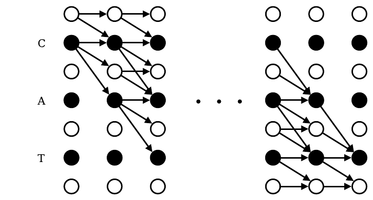

On this page
If I knew the label of every frame (a frame is one short slice of the audio), I could score each frame against its label and average. I don't. The target tokens (a token is one unit of output, a letter on this page) are far fewer than the frames, and nothing says which frames belong to which token:
So I need a loss that needs no frame-to-label alignment and can collapse many frame predictions into a shorter token sequence. That loss is Connectionist Temporal Classification (CTC).
| Part | What it answers |
|---|---|
| CTC | how blanks and collapsing turn frames into text |
| The loss | why it adds up every path that collapses to the target |
| The forward table | how the sum is computed without listing paths |
| Forward-backward | where each frame's gradient comes from |
| Beam search | how to read out one transcript at inference |
| Results and pitfalls | does it work, and what breaks in practice |
CTC adds a blank token to the vocabulary: a frame that outputs blank outputs no symbol. Each of the T frames, a feature vector such as the MFCCs on the audio features page, then gets one probability per symbol:
To read a transcription off the frames, merge repeated tokens, then remove blanks:
from itertools import groupby
def collapse(path, blank="_"):
# merge repeats, drop blanks
merged = [s for s, _ in
groupby(path)]
return [s for s in merged
if s != blank]
collapse(list("cc_att"))
# ['c', 'a', 't']
10 input frames, one prediction per frame
3 output tokens
π is one path: the prediction picked at each frame. B(π) is that path after the collapse rule is applied to it. The blank token soaks up the extra frames. Ten noisy frames collapse to three real tokens, so the model never needs to know where each letter starts or ends.
Training never trusts one path. It adds up every path that collapses to the ground truth y (the known correct transcript), then takes the negative log:
The path c c _ a t t is one term of that sum.
One path carries only a share of P("cat"|x); the loss sums every path that collapses to "cat".
The catch is the count. Each frame spreads its probability over every symbol, so the alignments explode:
For the toy target "cat" with 6 frames, 84 paths collapse to "cat"; their probabilities add up to the model's total belief in "cat" over every timing. No single alignment is ever chosen during training.
Here is that count of valid paths for four words as the number of frames grows.
Every extra frame multiplies the timings; a double letter needs a blank, so "too" needs 4 frames.
It is the same negative-log trick as categorical cross-entropy, one level up:
In PyTorch the whole loss is one call; the rest of this page is what that call computes:
import torch
# frames, batch, symbols
T, N, C = 6, 1, 4
# per-frame log-probabilities
x = torch.randn(T, N, C)
log_probs = x.log_softmax(2)
# targets c, a, t
y = torch.tensor([[1, 2, 3]])
# blank is index 0
# "sum" gives -log P(y|x)
ctc = torch.nn.CTCLoss(
blank=0, reduction="sum")
input_lengths = torch.tensor([T])
target_lengths = torch.tensor([3])
loss = ctc(
log_probs, y,
input_lengths, target_lengths)
CTC never lists the alignments. It sums them with dynamic programming, reusing smaller sums: the forward-backward algorithm, one sweep from the first frame and one from the last.
A valid alignment is any frame sequence that collapses to the ground truth. Count those paths first, then swap the counts for probabilities.
So CTC builds an extended target:
Aligning the 6 frames to the 7 columns, each frame can stay on its column, step forward by 1, or skip forward by 2 over a blank between different symbols.
That gives a lattice: node (t, s) means frame t has matched up to column s, 6 rows by 7 columns. A path through this grid is one alignment, and each cell of the DP table holds the probability (or count) of every path reaching it.
Figure 3 of Graves et al. (ICML 2006). doi:10.1145/1143844.1143891

Figure 3. … Black circles represent labels, and white circles represent blanks. … From Graves et al. (2006).
Of the three moves only the skip has a rule: it may jump over a blank only between two different letters, so a blank never skips to the next blank and a double letter keeps its blank.
A skip is blocked from a blank, and between two copies of the same letter.
The forward algorithm fills each cell with the ways to reach it, using exactly those moves.
ext is the extended target from the card above, and col[s] is the column of probs that holds ext[s] (blank first, then the letters). The listings count frames and columns from 0, as Python does; the equations count from 1.
import numpy as np
def ctc_forward(probs, ext, col):
T, S = len(probs), len(ext)
alpha = np.zeros((T, S))
first = probs[0]
alpha[0, :2] = first[col[:2]]
for t in range(1, T):
prev = alpha[t-1]
# stay
a = prev.copy()
# step
a[1:] += prev[:-1]
# skip
for s in range(2, S):
if ext[s] != ext[s-2]:
a[s] += prev[s-2]
a *= probs[t, col]
alpha[t] = a
total = alpha[-1, -2:].sum()
return alpha, total
Build ext and col once, before the call:
ext = ["_"] + [x for ch in target
for x in (ch, "_")]
col = [vocab.index(ch)
for ch in ext]
Each cell of the forward table adds what flows in from its three neighbors in the row above, times this frame's probability. The same forward recursion runs a hidden Markov model; the HMM page builds it from scratch.
Six rows of local sums hold the total over all 84 alignments without listing a single one.
The total is not enough for training. Training needs a gradient at every frame, the correction that compares where the credit should go with what the model predicted. That needs each frame's share of the credit for each target position, the posterior probability. The forward pass gives the prefix mass up to a cell, the backward pass the suffix mass from it to the end, and joining them gives the posterior:
The backward listing is the forward one run from the last frame back, with the same ext and col.
def ctc_backward(probs, ext, col):
T, S = len(probs), len(ext)
beta = np.zeros((T, S))
last = probs[-1]
beta[-1, -2:] = last[col[-2:]]
for t in range(T - 2, -1, -1):
nxt = beta[t+1]
# stay
b = nxt.copy()
# step
b[:-1] += nxt[1:]
# skip
for s in range(S - 2):
if ext[s] != ext[s+2]:
b[s] += nxt[s+2]
b *= probs[t, col]
beta[t] = b
return beta
The path toy showed one alignment; training never picks one. Untrained, the posterior says "everywhere, a little". Trained, it says "right here, a lot". That sharpening is learning.
On an untrained toy table for "cat" (8 frames, each predicting 0.28 for the blank and 0.24 for every letter), each frame still gets its own share, and so its own push.
Each frame's prediction is pushed toward its share of the credit.
alpha, total = ctc_forward(
probs, ext, col)
beta = ctc_backward(
probs, ext, col)
# the card's fraction, all (t, s)
post = alpha * beta / (
probs[:, col] * total)
share = np.zeros_like(probs)
for s, k in enumerate(col):
# columns of one symbol add up
share[:, k] += post[:, s]
# the card's dL/dz
grad = probs - share
Credit is spread over every valid path, then concentrates as the model learns (the softmax tables are illustrative toys).
At inference the model must return one output sequence. Greedy decoding takes the best symbol per frame and throws away probability mass. Beam search keeps several candidate sequences alive and merges the paths that collapse to the same answer. The version on this page is the CTC prefix beam search of Hannun et al. (2014); Graves et al. used a different prefix search.
On the toy table below, greedy sees exactly one path to "ab". Fifteen paths collapse to "ab"; beam search with beam width 3 (candidates kept per frame) merges fourteen of them and prunes (drops) the last.
Each card line is one branch of the listing. Start from beams = {"": (1.0, 0.0)}, call beam_step once per frame, and read off the prefix with the largest pb + pnb.
import collections
def beam_step(beams, p_t, vocab,
width=3):
# g -> [p_b, p_nb] at frame t
n = collections.defaultdict(
lambda: [0.0, 0.0])
letters = list(
enumerate(vocab))[1:]
# old totals at frame t-1
for g, v in beams.items():
pb, pnb = v
P = pb + pnb
n[g][0] += P * p_t[0]
for k, c in letters:
q, gc = p_t[k], g + c
if g and c == g[-1]:
n[g][1] += pnb * q
n[gc][1] += pb * q
else:
n[gc][1] += P * q
rank = lambda kv: sum(kv[1])
best = sorted(
n.items(), key=rank,
reverse=True)
return dict(best[:width])
| frame | _ (blank) | a | b |
|---|---|---|---|
| t1 | 0.20 | 0.55 | 0.25 |
| t2 | 0.20 | 0.50 | 0.30 |
| t3 | 0.25 | 0.15 | 0.60 |
| t4 | 0.25 | 0.15 | 0.60 |
Fixed illustrative table. Collapse rule is standard CTC: merge repeats first, then drop blanks.
Beam search adds up the paths that collapse to the same answer; that merged mass is why it beats greedy.
Graves et al. (2006) trained a bidirectional LSTM with CTC on TIMIT, a corpus of read English sentences. An LSTM is a recurrent network with a gated memory; bidirectional means one direction reads forward and one backward, so each frame sees both sides. Each frame is 26 numbers:
The score is label error rate (LER), the edit distance between output and target divided by the target length, on the TIMIT test set. Both are means over 5 runs ± standard error. An HMM (hidden Markov model) hybrid is the older system, a network scoring each frame for an HMM.
The difference is significant (p < 0.01, Table 1 caption), and CTC got there with no HMM and no frame-level labels.
CTC treats each frame's prediction as independent of the others once the audio is given, so it cannot use what it already output. RNN-T (recurrent neural network transducer) adds a prediction network that reads the previous outputs, so the model learns how likely each token is after the ones before it alongside what the audio says: